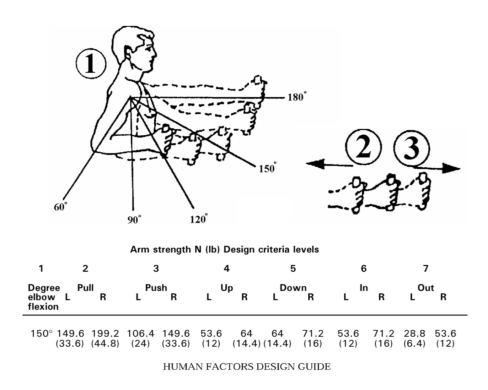
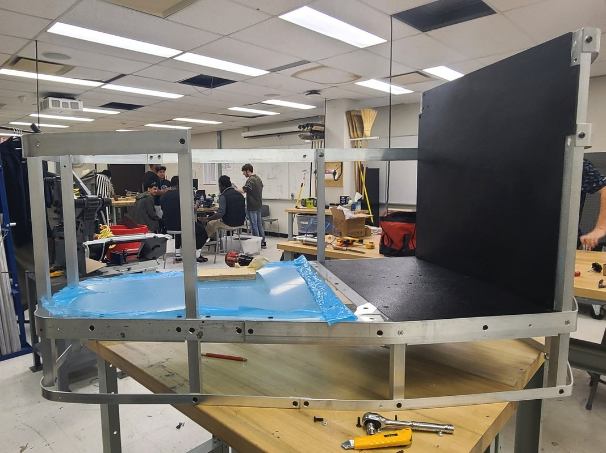
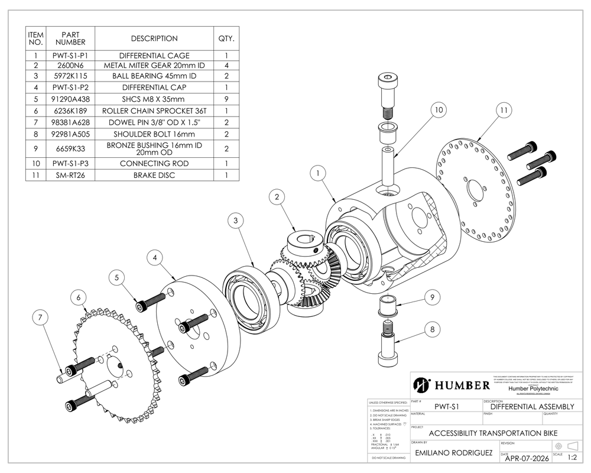
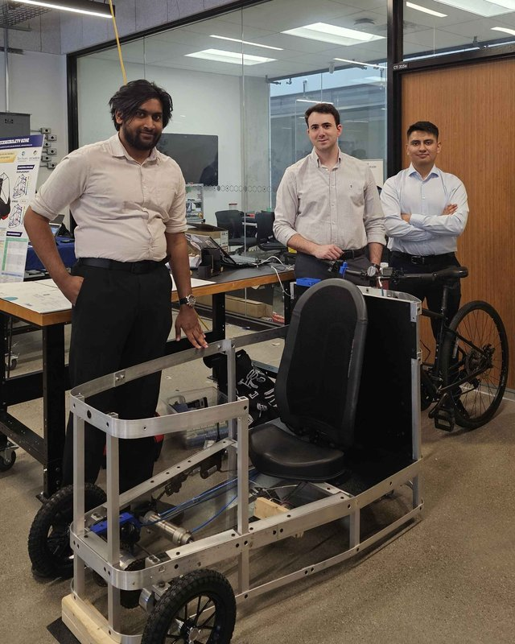
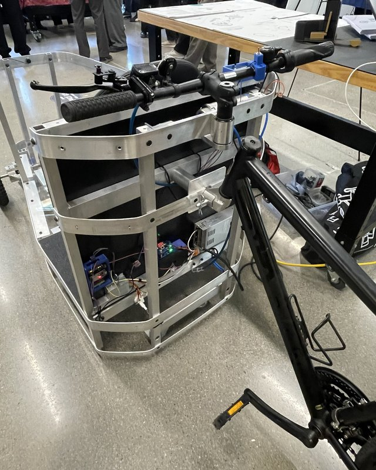
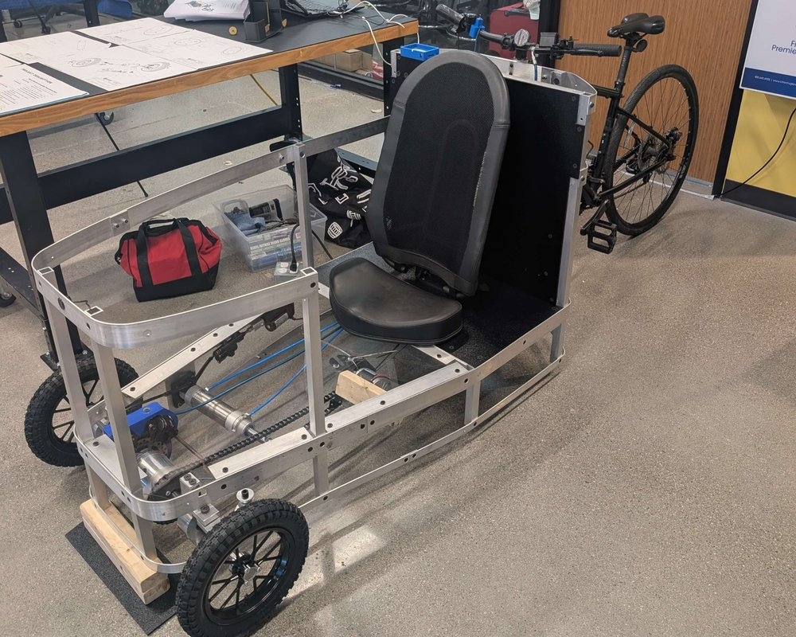
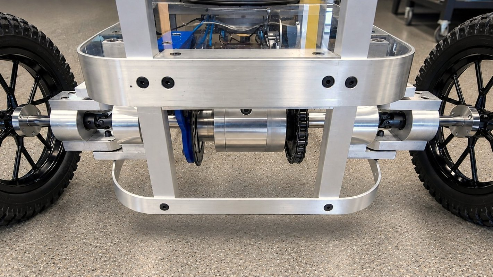

For my final year capstone, my team worked closely with a family who needed a custom solution for their son. The client requested a high-load bearing vehicle for one driver and one passenger seated in front of the driver. To fit within a residential elevator, the passenger cabin needed to detach while maintaining the electrical assist.
A Critical Failure Mode involved the load-bearing components, such as driveshafts and chassis, plastically deforming or breaking under stress.
To select a suitable material and geometry, we performed analytical calculations of bending and torsion, as well as FEA simulations. Given the working stresses and a chosen safety factor, an appropriate material and geometry were selected. For example, the driveshaft is made of 4140 steel with a diameter of at least 2 cm.
A recurrent Critical Failure Mode revolved around the danger of over-relying on battery charge. If the charge was depleted and a critical system depended on it, such as steering and braking, the user could be seriously hurt.
Thus, it was decided to employ mechanical solutions for these that amplified the user’s manual input using hydraulics, sized for the 5th-percentile human force capability so even weaker users can operate them.
Another Critical Failure Mode was failing to stop the vehicle safely.
To improve the robustness of the vehicle, redundant braking systems were introduced, including an automated electrical brake triggered by LiDAR and speed-sensor readings. Although each braking system introduced new Failure Modes, using a mix of electrical and mechanical implementations spread across different parts of the powertrain reduced the chance of all systems failing.







Developed, manufactured, and assembled a fully functional prototype capable of reaching 15 km/h, featuring a detachable passenger cabin designed for residential elevator access. The prototype integrated a front-wheel-drive open-differential transmission, hydraulically assisted steering, and hydraulic braking. Safety and monitoring features included LiDAR-based obstacle detection, automated emergency braking, and speed sensing. An ESP32-based wireless communication system enabled vehicle data to be displayed through a mobile application.